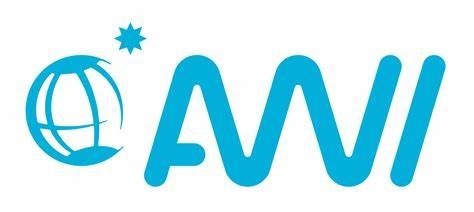
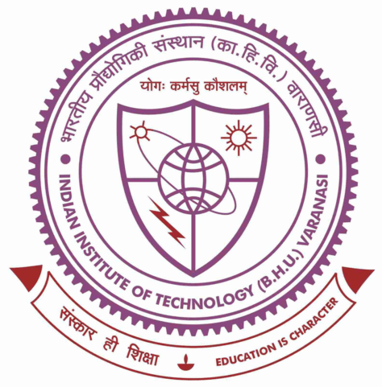
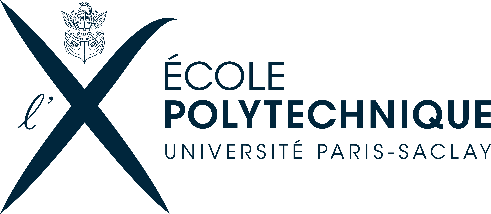
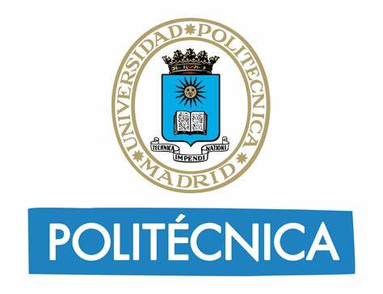
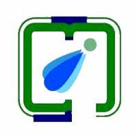
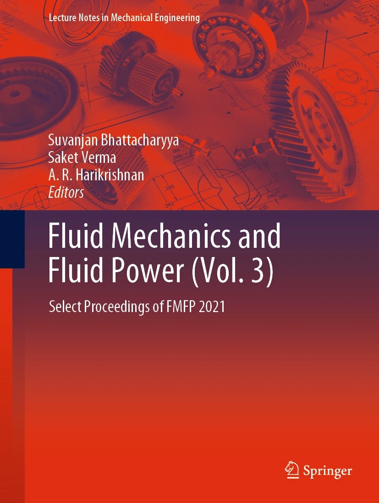

About Me
Hey there!
To know more about my academic and professional journey, feel free to explore the sections below.For a quick overview, you can download my resume here.
Work Experience
Hilfswissenschaftler (Research Assistant)
Chair of Computer Architecture and Parallel Systems, TU Munich
Under the professorship of Prof. Martin Schulz, I'm contributing towards the Deep-Sea projects , mainly sys-sage and mitos:
- Involved in performance optimization and identifying potential memory leaks within the sys-sage codebase.
- Reduced valgrind-reported memory leaks by ~99% in sys-sage (See Durganshu/sys-sage).
- Improving the portability of mitos for Intel-based computing systems (See Durganshu/mitos).
Hilfswissenschaftler (Research Assistant)
Chair of Aerodynamics and Fluid Mechanics, TU Munich
Under the professorship of Prof. Xiangyu Hu , I developed a Python interface utilizing pybind11 for SPHinXsys, an open-source Smoothed Particle Hydrodynamics (SPH) library , enabling seamless integration of the library's capabilities into Python-based workflows. I worked here until September 2023.
C++ Linux Python Pybind11 CI/CD Git
Hilfswissenschaftler (Research Assistant)
Alfred Wegener Institute, Helmholtz Centre for Polar and Marine Research, Bremerhaven, Bremen
Contributed towards the development of preCICE 3.0
- Removed deprecated features, including MPI-single tags, VTK Support, and Master/Slave tags.
- Migrated existing mesh-to-mesh mapping tests to use samples (preCICE 3.0 feature).
Working student - Cloud Graphics and Gaming
Intel Deutschland GmBh, Munich
At Intel, I was a part of the Visual Cloud Engineering team, mainly involved in:
- Performance analysis and benchmarking of Vulkan and OpenGL-based graphics applications on Intel dGPUs and Xeon Processors (using Intel Vtune, C, C++, Linux).
- Extending the features of OpenGL and Vulkan-based ‘gears’ graphics application for cross-OS (Linux and Windows) and cross-API compatibilities with on and off-screen rendering.
- Supporting the lab infrastructure by Linux troubleshooting and bash scripting.
CAE Engineer - Development
Zeus Numerix Pvt. Ltd., Pune (India)
At Zeus Numerix, I was involved in rigorous problem-solving and software development in the domains of Computational Electromagnetism, Radar signature prediction, and target detection. My responsibilities included:
- Develop multi-disciplinary numerical algorithms for critical defense, aerospace & industrial applications.
- Assist in the implementation of specific features to the in-house developed C++ based CAE products, carryout their verification & validation, and customize them for a given application
- C++ based software for Radar Cross Section prediction for complex targets using the SBR method.
- Algorithm to construct 2D and 3D ISAR images of far-field targets
- Hotspot identification and scattering center extraction for far-field targets.
- Structural analysis of Plume Dissipation Mechanism.

Research Intern
Indian Institute of Technology (BHU), Varanasi (India)
At the Department of Mechanical Engineering, I worked on the development of:
- A regression model using curve fitting and non-linear regression techniques to predict the variation of heat transfer coefficient on the surface of a nuclear fuel rod during jet impingement quenching.
- 1D and 2D numerical models of jet impingement quenching on a nuclear fuel rod using numerical techniques on MATLAB. The models could predict the temperature gradient along the axial and radial directions of a nuclear fuel rod.
Research Intern
Indian Institute of Technology, Kharagpur (India)
At the Department of Aerospace Engineering, I worked on the development of:
Education
MSc in Computational Science and Engineering
Technical University of Munich (Germany)
Coursework: Advanced Programming, Scientific Computing, Computer Architectures, Parallel Programming, Numerical Algo. for HPC, CFD.

Visiting Student - EuroTeQ
École Polytechnique, Paris (France)
Coursework: Distributed Systems, Computer Networks

Exchange Student - ATHENS program
Universidad Politécnica de Madrid, Madrid (Spain)
Coursework: Spanish economy and navigation in the 15th to 18th centuries by ETSI Navales (Naval Engineering)

B.Tech in Mechanical Engineering
Indian Institute of Information Technology, Design and Manufacturing, Jabalpur (India)
Bachelor's thesis: Numerical Investigation of Jet Impingement Quenching
Research Publication

Analysis of Heat Flux Quenching of a Cylindrical Rod Using Oxide Based Nanofluids
Fluid Mechanics and Fluid Power (Vol. 3) - Select Proceedings of FMFP 2021
Gupta, V., Mishra, P., Mishra, D., Ghosh, P. (2023). Analysis of Heat Flux Quenching of a Cylindrical Rod Using Oxide Based Nanofluids. In: Bhattacharyya, S., Verma, S., Harikrishnan, A.R. (eds) Fluid Mechanics and Fluid Power (Vol. 3). FMFP 2021. Lecture Notes in Mechanical Engineering. Springer, Singapore. https://doi.org/10.1007/978-981-19-6270-7_56